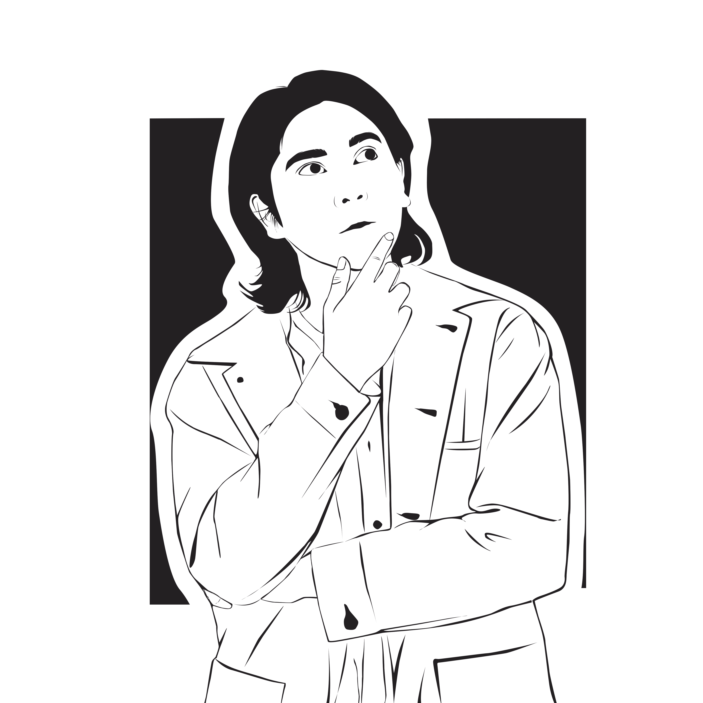
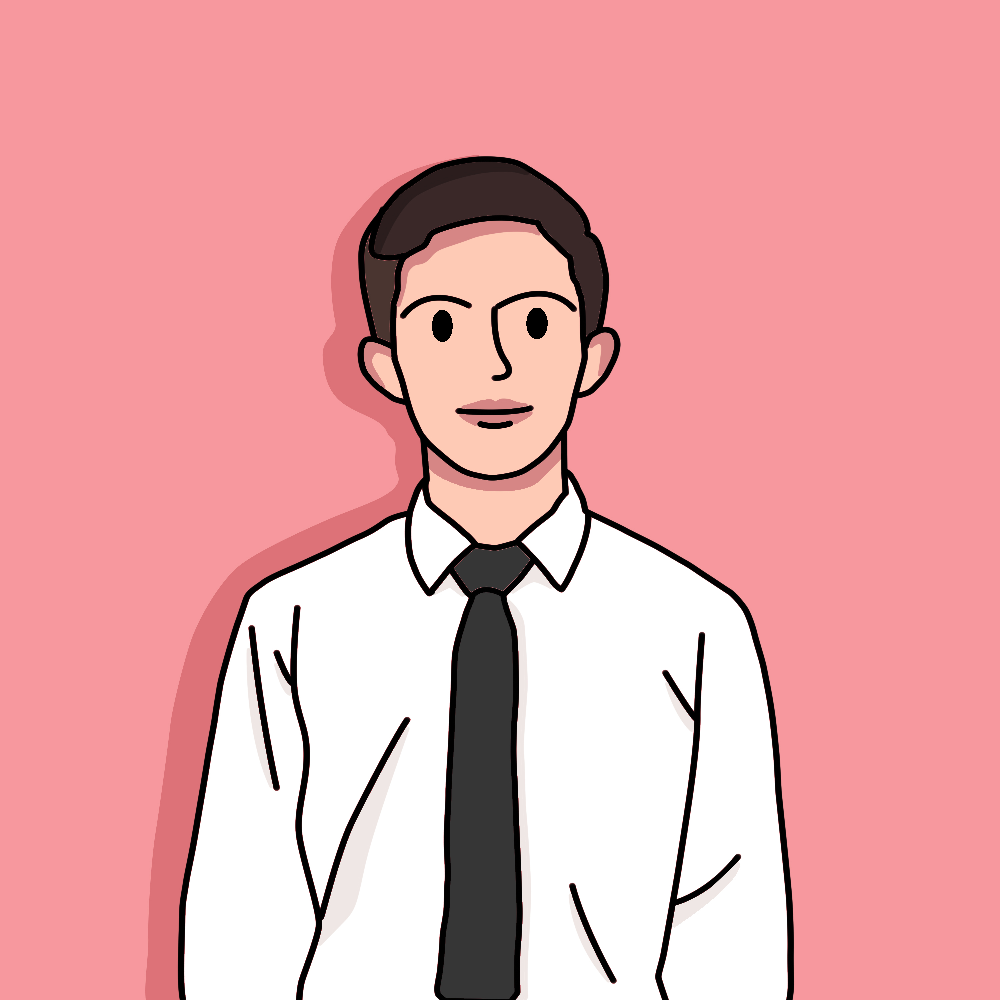

Line Art
Line art adalah jenis gambar digital dengan gaya seperti gambaran pensil dan tidak berwarna, gaya ini cocok kepada yang ingin keren namun tidak banyak warna.

Coffe Art
Coffer art adalah jenis gambar digital yang memiliki nuansa kopi latte yang membuatnya terasa nyaman dan mempunyai keunikan dalama gambar digital tersebut.

Simple Art
Simple art adalah jenis gaya normal dengan memanfaatkan semua warna, namun jenis gambar digital ini tetap mempertahankan karakteristiknya yaitu simple.